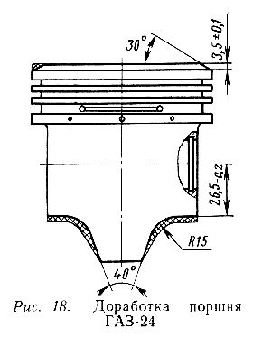
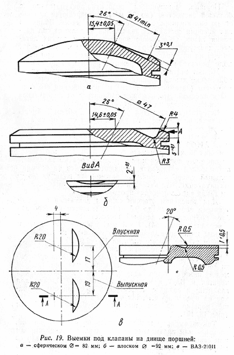
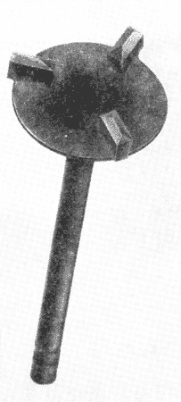
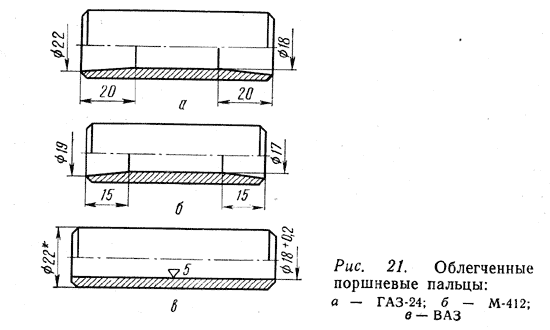

Блок цилиндров двигателя М-412 выполнен из алюминиевого сплава АЛ-9. Изготавливается литьем в кокиль. На Уфимском моторостроительном заводе освоена технология литья блока цилиндров под давлением. Такой блок имеет более тонкие стенки и на 4 кг легче.
Несмотря на кажущуюся ажурность, блок цилиндров обладает необходимой прочностью и жесткостью, хорошо отводит тепло. Жесткость обеспечивается тем, что разъем крепления масляного поддона находится ниже оси коленчатого вала, что обеспечивает минимальные деформации в зонах коренных подшипников, гильз цилиндров и плоскостей стыков с головкой блока цилиндров и с поддоном.
Для сборки форсированного двигателя лучше использовать блок цилиндров после пробега автомобилем 5-10 тыс. км. Такой блок уже не подвергается усадочным деформациям. Перед сборкой двигателя блок цилиндров обязательно следует проверить на соосность отверстий под коренные вкладыши. Имели место случаи, когда в результате сильного перегрева в период обкатки наблюдались отклонения в соосности этих отверстий до нескольких десятых долей миллиметра. Такой блок цилиндров, конечно, непригоден для форсированного двигателя.
Проверку блока цилиндров на соосность отверстий под вкладыши желательно производить специально сделанным валом-калибром. Если его нет, проверку все равно надо сделать. Опыт сборки двигателей и подбора деталей к ним позволяет дать следующие рекомендации. В блок цилиндров укладывается коленчатый вал, в пригодности которого нет сомнений, с вкладышами, смазанными небольшим количеством моторного масла. Затяжка крышек коренных подшипников производится последовательно и постепенно от средней к крайним с усилием не более рекомендованного в обычных инструкциях.
Если таким образом уложенный коленчатый вал после среднего усилия рукой за передний конец вращается по инерции два-три оборота, то можно считать блок цилиндров пригодным для сборки. При этой проверке следует снять переднюю и заднюю крышки блока с резиновыми сальниками, если они были поставлены, так как вращение коленчатого вала из-за трения в сальниках существенно затруднится.
Для установки гильз под поршни диаметром 92 мм следует расточить блок цилиндров по двум размерам на каждый цилиндр. Размеры расточки: под посадочное место гильзы 100+0,035 мм, под водяную рубашку 115+0,4 мм (рис. 15). Операцию можно выполнить на расточном станке, имеющемся на каждом авторемонтном предприятии. Межцентровое расстояние у блока М-412 составляет 104 мм.
Во время расточки посадочных мест под гильзы цилиндров важно соблюсти их соосность и перпендикулярность к оси коленчатого вала. Лучше к моменту расточки иметь обработанные гильзы, чтобы можно было произвести их индивидуальную подгонку. Гильза должна свободно, но без люфта садиться юбкой в блок. Посадка под натягом недопустима, ибо при относительно тонких стенках гильзы неизбежно нарушается общая геометрия цилиндра. При посадке же с зазором, пусть даже незначительным, нарушается общая жесткость двигателя и появляется вероятность перекоса гильзы цилиндров в процессе работы двигателя или даже при сборке.
Двигатель М-412 имеет гильзы, непосредственно омываемые охлаждающей жидкостью, так называемые "мокрые гильзы". Такая конструкция, хотя несколько и уменьшает жесткость двигателя, зато создаст значительные преимущества перед двигателями с "сухими гильзами" по отводу тепла, что особо важно для надежной работы форсированного двигателя. Гильзы цилиндров стандартного двигателя М-412 изготавливаются из специального чугуна с высокой твердостью поверхности (НВ 200-240). В зависимости от размеров внутреннего диаметра гильзы делятся на пять групп, и маркируются краской разного цвета.
|
Группа |
Цветовой индекс |
Диаметр, мм |
|
А |
Черный |
82,05-82,06 |
|
B |
Синий |
82,04-82,05 |
|
C |
Красный |
82,03-82,04 |
|
D |
Желтый |
82,02-82,03 |
|
E |
Зеленый |
82,01-82,02 |
При сборке двигателя со стандартными гильзами диаметром 82 мм лучше подобрать
весь комплект одной размерной группы (при условии наличия поршней соответствующего
размера), так как в этом случае для замены вышедшей из строя гильзы достаточно
иметь лишь одну запасную.
Если нет полного комплекта гильз одной размерной группы, то можно собирать двигатель
с гильзами разных размерных групп, но при обязательном условии соответствия
размера каждой гильзы размеру своего поршня, имеющего соответствующий цветовой
индекс.
Более сложно собирать форсированный двигатель с гильзами и поршнями диаметром 92 мм. Для этого нужно иметь полный комплект (желательно сверх него иметь еще 2 гильзы в запасе) гильзы цилиндров от двигателей М-21, ГАЗ-53 (или ГАЗ-24). У этих гильз в отличие от гильз стандартного двигателя М-412 имеется вставка из специального жаропрочного чугуна, запрессованная в верхнюю часть гильзы в 50 мм от торца для повышения износостойкости и долговечности. Чтобы установить такую гильзу в уже расточенный блок цилиндров М-412, се необходимо подрезать по размеру. Однако в гильзе остается часть жаропрочной вставки на глубине 16 мм. Вот это и создает определенные трудности.
Дело в том, что при обрезке гильзы на токарном станке обрезным резцом в связи
с разной твердостью основного материала гильзы и жаропрочной вставки, даже при
самой малой подаче резца оставшаяся часть вставки слегка приподнимается, и на
гильзе из-за этого образуются уступы очень малых размеров. Сначала мы на них
не обращали внимания. Но после обкатки обнаруживались сколы по торцу верхнего
компрессионного кольца (нижнее компрессионное и маслосъемное кольца не доходят
до уступа). Нельзя было и обрезать гильзу с торца на все 34 мм, так как при
зажатии гильзы в патрон токарного станка происходила ее деформация.
Приемлемой оказалась следующая технология. Обрезным резцом гильза подрезалась
на глубину основного материала, примерно на 4 мм с запасом по высоте в 1-2 мм.
Затем ножовкой вручную производилась окончательная обрезка. Точный размер по
высоте доводился на станке торцевым резцом с самой малой подачей. После обработки
место стыка вставки с гильзой на зеркале цилиндра не должно ощущаться на ощупь
мякотью пальца. Обрезанные по высоте гильзы еще не готовы для установки в блок
цилиндров, так как они мешают друг другу верхним и нижним наружными утолщениями.
Обработать эти утолщения до необходимых размеров можно напильником, очень осторожно зажав гильзу в тиски. Обработанные лыски должны быть одинаковы на верхнем и нижнем утолщениях. На гильзах первого и четвертого цилиндров - по лыске с одной стороны, на втором и третьем - с двух сторон. Теперь гильзы можно примерить в блоке цилиндров и проверить их правильную обработку. Гильзы не должны касаться друг друга во избежание взаимных деформаций при нагреве (зазор 1-2 мм), а разница по высоте верхних торцов соседних гильз не должна превышать 0,03-0,04 мм. Если гильзы правильно становятся в блок, их надо сразу пометить по номерам цилиндров, не забыв на гильзах второго и третьего цилиндров пометить, где передняя часть.
Для прокладки под гильзы лучше всего использовать новые прокладки от двигателей ГАЗ-24: остается только ножницами срезать сегменты по размеру. Если готовых прокладок нет, их можно вырезать из ленты холоднокатаной меди толщиной 0,4 мм. В крайнем случае можно использовать наборы более тонких прокладок. но не более двух штук на каждый цилиндр. На изготовленных самостоятельно прокладках обязательно нужно снять заусенцы.
После приготовления прокладок наступает время генеральной подгонки гильз в блок цилиндров. Гильзы с прокладками устанавливаются в блок в соответствии с нанесенными метками и зажимаются головкой блока (без прокладки головки блока) на все гайки средним усилием, чтобы не деформировать головку блока.
Через 20-30 мин головка блока снимается и проверяется величина выступания гильз над его верхней плоскостью. Она должна быть 0,08-0,12 мм для всех гильз, а высота каждой гильзы над блоком цилиндров должна быть одинакова по всему диаметру гильзы, чтобы исключить перекос гильзы и соблюсти их соосность.
При окончательной сборке двигателя для надежной герметизации системы охлаждения прокладки гильз цилиндров смазываются бакелитовым лаком или грунтом под синтетическую краску. Смазывать обычной нитрокраской не рекомендуется, так как она до окончательной затяжки головки блока успевает высохнуть. В этом случае нитрокраска принесет больше вреда, чем пользы.
Поршневая группа автомобильного двигателя, состоящая из поршня, поршневого пальца, колец поршневых и стопорных- для крепления пальца, работает в очень тяжелых условиях: высокие температурные, газовые и инерционные нагрузки, носящие близкий к ударному характер, большие знакопеременные скорости движения, ограниченная смазка, недостаточность теплоотвода.
Необходимость подробного рассмотрения некоторых конструктивных особенностей деталей поршневой группы связана не только с тем, что они требуют особого внимания при подготовке двигателя к соревнованиям, но и с тем, что многие спортсмены при этом стремятся, порой не всегда оправданно, изменить конструкцию или обработку этих деталей.
Поршень условно можно разделить на три части, выполняющие различные функции: днище, уплотняющая часть, направляющая часть (юбка). Днище и направляющая часть образуют головку поршня (РИСУНОК). Днище поршня, образующее с головкой блока цилиндров камеру сгорания, кончается у верхней кромки проточки под верхнее компрессионное кольцо. Эту часть поршня иногда называют жаровым поясом, так как днище поршня омывается открытым пламенем и горячими газами, раскаленными до температуры 1500-2500° С. Для увеличения прочности и повышения общей жесткости' днище выполняют достаточно массивным и снабжают ребрами, связывающими стенки и днище с бобышками. Толщина днища, как правило, постепенно увеличивается от центра к периферии. При таком сечении улучшается теплоотвод от днища и уменьшается температура его нагрева.
В нижней части поршня двигателя ВАЗ имеются боковые выемки, чтобы противовесы коленчатого вала не касались поршня. Такая конструкция поршня в некоторой степени способствует появлению вертикальных трещин под бобышками особенно после перегрева двигателя, хотя его овальность до 0,2 мм и конусность (в верхней части диаметр юбки меньше, чем в нижней, на 0,045 мм) предназначены для компенсации теплового расширения и заклинивания.
Днище поршня двигателя М-412 имеет выпуклую форму, что придает щелевидность камере сгорания, а это несколько ухудшает процесс горения. Большая поверхность выпуклого днища по сравнению с плоским увеличивает площадь соприкосновения с горячими газами, что повышает общую его температуру. Излишний нагрев днища поршня вообще нежелателен, так как это ухудшает весовое наполнение цилиндра и приводит к некоторому снижению мощности двигателя из-за повышенного подогрева свежего заряда топливной смеси. Однако благодаря выпуклой форме днища поршня уменьшается объем камеры сгорания, к тому же конструкторам удалось добиться уменьшения массы поршня и увеличения прочности днища,
Поршни, движущиеся возвратно-поступательно с большой скоростью (до 20 м/с), подвергаются воздействию сил инерции, пропорциональных массе. Величина сил инерции составляет значительную долю от сил давления газов. Облегчение поршня, как и других деталей, движущихся возвратно-поступательно, уменьшает потери на преодоление сил инерции, особенно при переходе двигателя с одного режима работы на другой.
Можно считать целесообразным и лишенным риска облегчение днища поршня двигателя М-412 за счет его проточки (затемненной части) и приближения его формы к плоской. Это поможет избавиться от недостатков выпуклого днища и сохранить его достоинства.
Естественно, проточка увеличивает объем камеры сгорания, вследствие чего уменьшается степень сжатия и мощность двигателя.
Зато удешевляется эксплуатация, так как вместо бензина АИ-93 на транспортных и обслуживающих автомобилях можно применять бензин А-76. По этой причине проточку поршней можно рекомендовать владельцам автомобилей "Москвич", желающим пойти на незначительный ущерб в динамике автомобиля ради удобства эксплуатации. Что касается спортивных автомобилей, то им такая "декомпрессия" противопоказана.
Для доведения степени сжатия двигателя с проточенными поршнями до 9,5-10 приходится фрезеровать блок цилиндров по верхней плоскости на 1 мм (в сборе с передней крышкой). На 1 мм следует укоротить и гильзы цилиндров, проторцевав верхнюю кромку в токарном станке. Кроме того, на 1,8-2,0 мм фрезеруется плоскость разъема головки блока цилиндров.
При такой компоновке двигателя не должна произойти "встреча" поршня и всасывающего клапана, так как между ними остается зазор 0,8-1 мм в момент подхода поршня к ВМТ в конце такта выхлопа. Однако для гарантии в связи с неизбежным "зависанием" клапанов на предельно высоких оборотах необходимо в днище поршня сделать выборку глубиной 1-1,5 мм (рис. 18, 19).


Такую выборку можно сделать вручную шарошкой, электро- или пневматической дрелью. Тем спортсменам или секциям, которым часто приходится иметь дело со сборкой спортивных двигателей, можно порекомендовать приспособление, предложенное мотористами спортивной лаборатории АЗЛК (рис. 20). Оно представляет собой клапан с напаянными на торцевую часть тремя или четырьмя резцами. Фреза-клапан ставится на место клапана в головку блока, головка блока крепится на блок цилиндров, поршень при этом находится в ВМТ. Затем операция выборки металла с поршня производится простейшим приспособлением типа приспособления для притирки клапанов. И так. в каждом из четырех поршней. Делать выборку под выхлопные клапаны нет необходимости. Для двигателя ВАЗ выборку надо делать под оба клапана (кроме поршней двигателя ВАЗ-2106, имеющих проточку верхней части днища).
Кстати, при сборке двигателя со стандартными (необлегченными) поршнями при "поджатии" головки блока более 0,8-0,9 мм надо обязательно делать в поршнях такие же выборки.
В процессе эксплуатации двигателей ВАЗ-21011, особенно в режимах 7000-7500 об/мин, наблюдались следы касания клапанов на днище поршня даже при стандартных фазах распределительного вала. В этом случае судьям технической комиссии вряд ли следует однозначно утверждать, что наличие выборок на днище поршня обязательно связано с установкой распределительного вала с измененными, фазами газораспределения (при проверке автомобиля на соответствие группе А-1).
Подбор и правильная установка поршневых колец являются одним из основных условий надежной и безаварийной работы двигателя. Следует отметить также, что время приработки поршневых колец к гильзе цилиндров определяет длительность обкатки двигателя.
Из комплекта поршневых колец стандартного двигателя М-412 верхнее компрессионное кольцо (хромированное) должно иметь при сборке несколько больший зазор в замке (0,4-0,5 мм). Такая величина зазора гарантирует отсутствие "прихватов" кольца и цилиндра при его интенсивном нагреве до 300-350° С. Нижнее 'компрессионное и маслосъемное кольца подбираются с зазором 0,2-0,4 мм. При установке колец на поршень надо проследить за правильностью расположения выточки колец (вверх) и разведением замков в разные стороны.
Для двигателя ГАЗ-24 промышленность выпускает несколько вариантов поршневых
колец.
Верхнее компрессионное кольцо выпускается хромированным или покрытым тонким
слоем электролитического лужения, прямоугольного сечения или овальной формы,
высотой 2,5 мм или 2,0 мм.
Предпочтение отдается кольцу, покрытому пористым хромом. Срок службы хромированного кольца в 3-3,5 раза больше луженого. При этом срок службы колец, расположенных ниже хромированного, также удлиняется.
Поршневые кольца с закругленными наружными кромками улучшают заклинивание масляного слоя под движущимся кольцом и, следовательно, смазку, а острая кромка разрушает масляную пленку. Нельзя забывать также, что на пути верхнего компрессионного кольца лежит стык оставшейся части жароупорной вставки в гильзе цилиндра. В процессе работы двигателя в этом месте может появиться незначительный уступ, поэтому и с этой точки зрения овальная форма кольца предпочтительнее, так как уменьшается вероятность поломки кольца или отдельных сколов.
Для лучшего уплотнения и уменьшения напряжения на торце, а также по ряду других причин верхнее кольцо выбирают меньшей высоты. Такие кольца уменьшают износ канавок вследствие. уменьшения сил инерции, особенно на больших оборотах.
Итак, считаем целесообразным верхнее компрессионное кольцо выбирать хромированным с закругленными наружными кромками и высотой 2,0 мм. Поршни, разумеется, должны иметь высоту канавки под верхнее кольцо соответствующего размера.
Нижнее компрессионное кольцо может быть поставлено либо чугунное луженое, либо стальное наборное (пакет колец). В последние годы в автомобильных двигателях все большее распространение получают стальные витые компрессионные кольца тарельчатой формы, изготавливаемые из калиброванной ленты. В качестве верхнего компрессионного кольца они не применяются, поскольку не отводят необходимого количества тепла от верхней части поршня и теряют упругость из-за повышенного нагрева, однако в качестве нижнего компрессионного кольца зарекомендовали себя хорошо, так как отдельные элементы лучше прилегают к стенке цилиндра, чем поставленное в эту канавку одно чугунное кольцо. Между отдельными тонкими пластинками пакета колец образуются канавки, в которых накапливается масло, вследствие чего обеспечивается надежная смазка трущихся поверхностей и улучшается уплотнение цилиндра. К тому же перекрытие замков и плотное прилегание тонких тарельчатых колец к торцевым стенкам канавки поршня способствуют уменьшению прокачки масла в камеру сгорания.
В заводском комплекте стальные компрессионные кольца легко отличить от маслосъемных по несколько большей ширине, тарельчатой форме и косому разрезу в замке. Стальные компрессионные кольца, устанавливаемые по два в канавку конусом вниз, имеют более темный оттенок.
Маслосъемные поршневые кольца, осуществляющие отвод излишнего масла со стенок цилиндра и ограничивающие таким образом попадание масла в камеру сгорания, одновременно являются основным элементом поршневой группы, регулирующим смазку верхней зоны стенок цилиндра. Поэтому выбору маслосъемных поршневых колец придается большое значение.
Сразу можно отметить, что и чугунные (дренажного типа) и наборные стальные маслосъемныё кольца показали вполне удовлетворительные результаты в самых тяжелых условиях шоссейно-кольцевых гонок и автомобильных ралли. Однако по некоторым соображениям предпочтение все же отдается набору стальных маслосъемных колец. Они имеют меньшую поверхность контакта со стенкой цилиндра, что несколько снижает потери на трение. Больший срок службы таких колец по сравнению с чугунными обеспечивается наличием в комплекте расширителя, который создает дополнительное радиальное давление поршневого кольца при его уменьшении вследствие износа. Кроме того, комплект наборного маслосъемного кольца имеет меньшую массу, чем одно чугунное, его легче, проще установить на поршень, в то время как из-за чрезвычайной хрупкости чугунные кольца часто ломаются.
Направляющая часть поршня (юбка)- часть поршня от нижней кромки канавки под маслосъемное кольцо до конца поршня служит для равномерного распределения бокового давления на зеркало цилиндра и для направления поршня при движении соосно цилиндру. В передаче бокового усилия от поршня к цилиндру участвует только часть боковой поверхности юбки, ограниченная в поперечном сечении углом 80- 100°. Это обстоятельство позволяет в целях уменьшения массы поршня и потерь на трение удалить часть юбки. При сборке двигателя с поршнями ГАЗ-24 следует подбирать пару поршень-цилиндр с зазором не менее 0,06-0,08 мм, для двигателя ВАЗ-0,08-0,1 мм.
При подборе пары поршень-цилиндр с меньшим зазором даже после длительной и тщательной обкатки двигателя при работе в режиме 6500-7000 об/мин появлялись надиры на стенках цилиндров, в результате которых существенно повышались потери на трение, увеличивался расход масла, снижалась компрессия и заметно падала мощность двигателя.
Поршневой палец служит осью в шарнирном соединении поршня с шатуном, воспринимает все передающиеся между ними силовые нагрузки ударного характера, работает в условиях ограниченной смазки.
Поршневые пальцы двигателей М-412 и ГАЗ-24 можно облегчить без ущерба для прочности (рис. 21). Облегченные поршневые пальцы в течение ряда лет эксплуатации спортивных двигателей подтвердили свою работоспособность и надежность.
